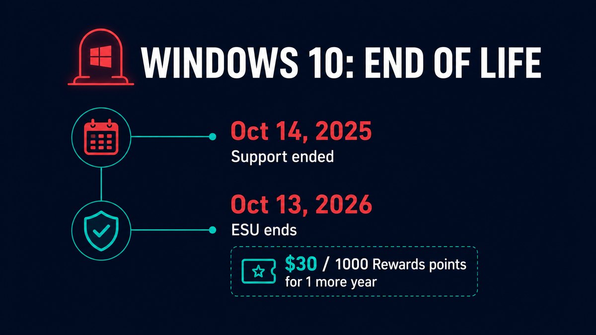
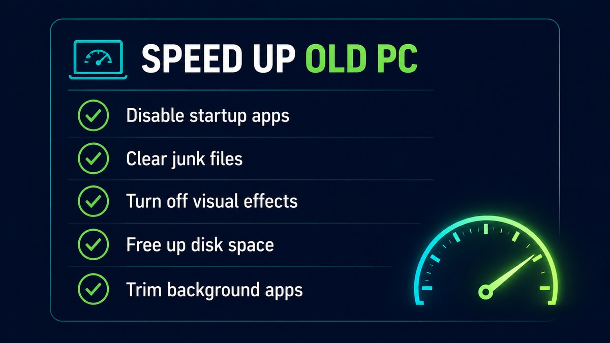

Windows 10 officially reached the end of the road on October 14, 2025. No more free security updates, no more fixes. If you're still on it, or you've been dragged onto Windows 11 on an older machine and it feels like wading through mud — this one's for you.
I'll cover your actual options now that Windows 10 is unsupported, then the free, no-nonsense steps to make an older PC genuinely quick on Windows 11. No "buy a new computer" cop-out.
What "end of support" actually means for you

Your Windows 10 PC didn't stop working on October 14 — it just stopped getting security updates. That's the real risk. Every month that passes, new vulnerabilities get found and patched on Windows 11 but left open on Windows 10. Over time, an unpatched machine becomes a softer target.
You have four honest options:
- Enrol in ESU (buy one more year). Microsoft's consumer Extended Security Updates program keeps security patches coming until October 13, 2026. You can get it by syncing your PC settings (free), redeeming 1,000 Microsoft Rewards points, or paying a one-time ~$30. It's a bridge, not a destination.
- Upgrade to Windows 11. Free if your PC meets the requirements. If it's "unsupported" but recent, it often still runs fine — and the rest of this guide makes it fast.
- Switch to Linux. For an old machine used mainly for browsing and documents, a lightweight Linux distro brings it back to life and stays secure for free. Bigger learning curve, but genuinely viable.
- Do nothing (not recommended). The PC keeps working, but the security hole widens every month. Fine for an offline machine, risky for anything that touches the internet.
For most people, the answer is Windows 11 — and the complaint I hear most is "it's slow on my old PC." So let's fix that.
Make an old PC fast on Windows 11 — the free way

None of this costs money, and none of it is the registry-hacking nonsense that paid "optimizers" push. These are the changes that actually move the needle on weak hardware.
1. Cut your startup apps
The biggest cause of a slow boot and a sluggish desktop is too much launching at startup. Open Task Manager → Startup apps, and disable everything you don't need the second you log in — chat apps, updaters, "helper" tools. Your PC will boot noticeably faster.
2. Free up disk space
A drive that's nearly full makes everything slow, especially on older PCs with spinning hard drives. Clear temp files, the Recycle Bin, and old Windows update leftovers in Settings → System → Storage. Aim to keep at least 15–20% of the drive free.
3. Turn off the eye candy
Windows 11's animations and transparency look nice but cost performance on old graphics. Search "Adjust the appearance and performance of Windows", choose Adjust for best performance (or keep just "smooth edges of screen fonts"), and apply. The whole interface gets snappier instantly.
4. Trim background apps
Plenty of apps keep running and phoning home in the background. In Settings → Apps → Installed apps, turn off background activity for anything you don't need live, and uninstall programs you stopped using. Each one you remove frees RAM and CPU.
5. Get current on updates (yes, really)
This is counterintuitive on an "old PC" article, but Windows 11's 2026 updates genuinely help older hardware — Microsoft added a Low Latency Profile in the June 2026 update that pushes processors to their rated speed faster, with the most noticeable benefit on older machines. So keep Windows 11 updated; some of the speed-up is already done for you.
Want it done in a couple of clicks?
Every step above is free and manual — and if you like doing it by hand, you should. But steps 1, 2 and 4 (startup, junk, background apps) are exactly what I automated in my own free tools, because I got tired of doing them on every machine I touch.
RBS Optimizer Pro handles startup management, junk cleanup and a real-time performance view in one window. RBS PC Cleaner focuses on safe junk and cache clearing with a one-click "Gaming Mode" that trims memory and background apps when you need the resources. Both are free, offline, no subscription, and — importantly on an old PC — lightweight themselves. They won't fix Windows 10's lack of security updates (nothing but a real update can do that), but they'll make a Windows 11 machine on older hardware feel a lot quicker.
TL;DR
- Windows 10 security support ended Oct 14, 2025.
- Buy one more year with ESU (free with settings sync, 1,000 Rewards points, or ~$30) through Oct 2026 — or move to Windows 11 / Linux.
- On Windows 11: cut startup apps, free disk space, kill visual effects, trim background apps, stay updated.
Bottom line
An old PC isn't junk — it's usually just clogged. Most "my computer is too slow for Windows 11" machines come right back to life with an hour of free cleanup and the settings above. Buy yourself a year with ESU if you need breathing room, then either move to Windows 11 and tune it, or give the machine a second life with Linux.
Got a specific old PC that won't behave? Tell me the specs on the contact page and I'll point you at the right fix. Solo dev, Singapore.